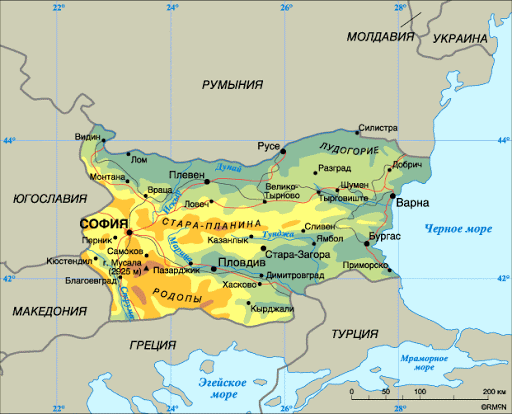

 Болгария находится в крайней юго–восточной части Европы, занимает северо–восточную часть Балканского полуострова.
Как по площади, так и по населению – эта страна является одной из самых маленьких стран в Европе.
Омывается водами Черного моря, граничит с Румынией, Сербией, Македонией, Грецией, Турцией. Площадь 110,9 тыс. кв. км.
Значение Болгарии определяется, прежде всего, ее географическим расположением,
т.к. она находится на перекрестке дорог Западной и Центральной Европы и Близкого и Среднего Востока.
Климат
По климатическому признаку, обычно, страна делится на три зоны. В северной Болгарии умеренно – континентальный климат.
Климат Тракийской равнины – степной, а на побережье Черного моря по многим своим характеристикам приближается к среднеземноморскому.
В стране средняя температура самого холодного месяца января – составляет от -2 до +2°C. В горах столбик термометра может опуститься до -10 -15°C градусов.
Средняя температура самого теплого месяца июля – колеблется от +18 до +24°C в северных районах до +28 в южных и на черноморском побережье, при этом она редко переваливает за 30°C.